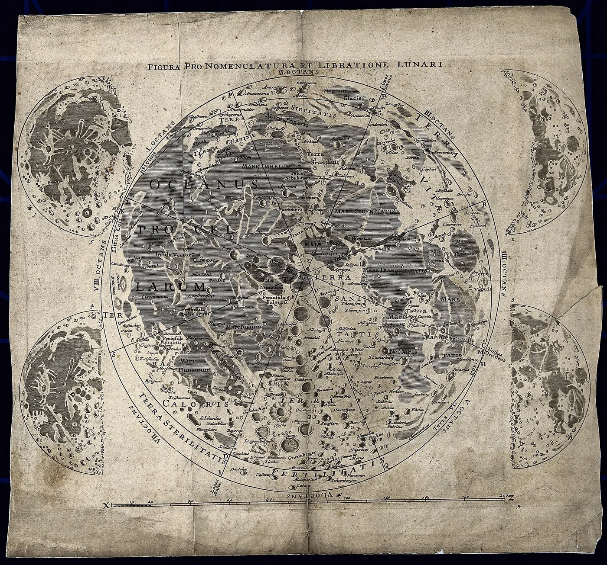
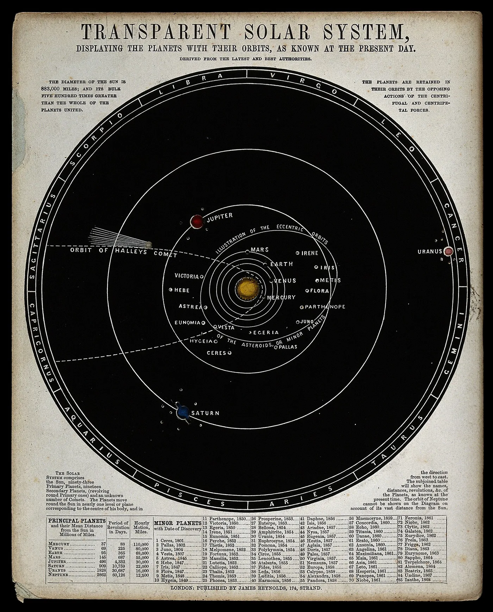
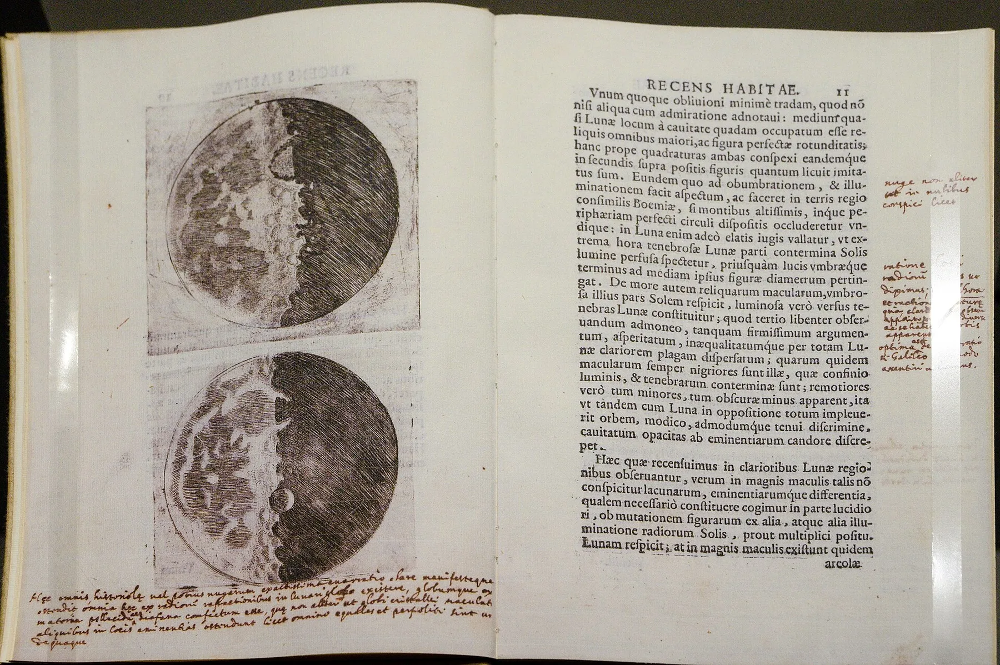

Four steps to an icon.
Lookup
- Registry
- loaded
- Provider
- none
- Name
- none
- Asset
- none
First you load it.
Ask for moon and get its sprite or font glyph from Lucide, Tabler, Heroicons, Phosphor or Fluent. Switching sets is one line.
Icons.SetProvider("lucide")
Icons.GetAsset("moon")Lookup
First you load it.
Lookup
Then you pick a set.
Lookup
Then you ask for a name.
Lookup
Then you use what comes back.
Switch sets without reloading.
A provider loads once on first use. After that every lookup is a table read.
Download only what you use.
An unused set costs nothing. Fluent alone is 20,289 icons and never loads unless you ask.
Fonts stay sharp at any size.
A font glyph is one TextLabel, crisp up to TextSize 100. A sprite is 24 pixels.
Builds cache on disk.
Sheets and fonts are stored per build hash, and older builds are pruned.
Old names keep working.
A renamed icon resolves through its alias to the real one.
Galileo drew the moon through a telescope in 1610. Molto draws it five ways.


providers

icons
Each set's icon count, added up for the sets you pick. Sets you leave out are never downloaded.
The button copies a snippet that loads the registry and looks up the name you typed. Paste it into your executor.